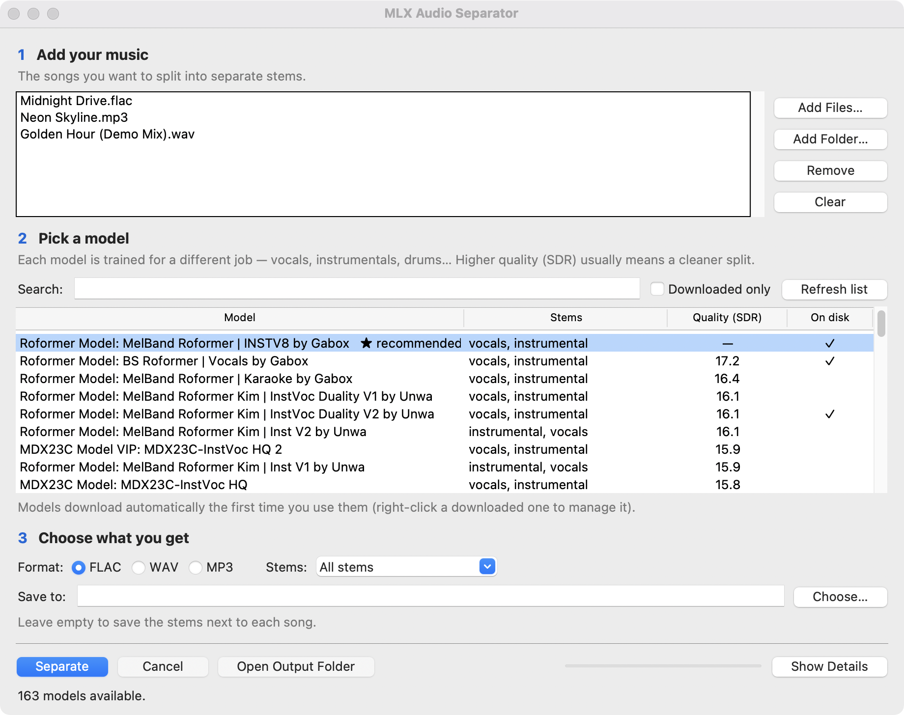

Split any song into stems, right on your Mac.
Vocals, drums, bass, instrumentals — separated on your Apple Silicon GPU. Free, private, and fast. Your music never leaves your computer.

No projects. No timelines.
Just add, pick, separate.
-
Add your music
Drop in single files or a whole folder — FLAC, WAV, MP3, and M4A all work.
-
Pick a model
Start with the ★ recommended all-rounder, or sort 160+ models by measured quality.
-
Choose & separate
All stems or just vocals; save as FLAC, WAV, or MP3 — then press Separate.
The same job as the paid sites — on your own machine.
Online splitters charge per song and make you upload your music. This does the work locally, for free, at Apple Silicon speed.
Private by default
Your audio never leaves your Mac. No uploads, no account, nothing phoned home — processing runs on your GPU.
Free and open source
No per-song fees, no subscription. The whole app is MIT-licensed and the engine is open too.
Fast on Apple Silicon
A 3–4 minute track separates in well under a minute on an M-series Mac, once the model is downloaded.
160+ community models
The Mel-Band RoFormer, BS-RoFormer, and MDX23C models the stem-separation scene actually uses — ranked by quality.
160+ models, ranked by quality.
Quality is scored as SDR — signal-to-distortion ratio; higher means a cleaner split. Pick the ★ recommended all-rounder, or search the full catalog by stem and score. Models download once, on first use.
…and 160 more in the app — drums, bass, guitar, piano, de-reverb and more. Hit Refresh list for the latest community releases.
Runs on your Mac. Nothing to install.
You need an Apple Silicon Mac (M1 or newer) on macOS 15 (Sequoia) or later — MLX runs on the Apple GPU, so Intel Macs aren’t supported.
The download is fully self-contained: Python, the MLX engine, and ffmpeg are all bundled. Drag the app to Applications and open it — there’s nothing else to set up.
The app is open source and signed ad-hoc, so macOS Gatekeeper blocks it on first launch. Clear the download quarantine once in Terminal, then open it normally:
xattr -dr com.apple.quarantine "/Applications/MLX Audio Separator.app"
Split your first track tonight.
Free, private, and open source. One self-contained download for Apple Silicon — nothing else to install.